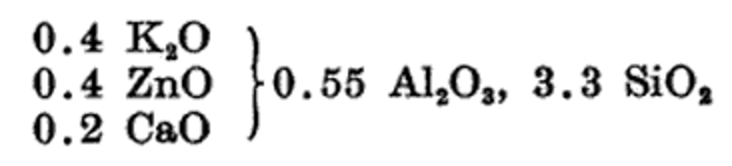

UMF Notation
Notation and visualization of the Unity Molecular Formula (UMF)
View on Github
Traditional Notation
While there are a number of more complicated ways to display brackets & chemical formulas (such as Mathematical Markup Language (MathML)), here we just use normal fonts with CSS styling.
|
0.4 K2O
0.4 ZnO 0.2 CaO |
} | 0.55 Al2O3, 3.3 SiO2 |
|
0.15 K2O
0.15 Na2O 0.4 CaO 0.3 PbO |
} | 0.2 Al2O3 | { |
1.49 B2O3
2.97 SiO2 |
|
K2O
Na2O CaO CoO |
0.15-0.75
0. -0.6 0.14-0.64 0 -0.06 |
} | Al2O3 | 0.1-0.5 | { |
SiO2
B2O3 |
1.1-1.7
0.2-0.5 |
|
0.3 K2O
0.7 CaO |
} | 0.3 to 1.0 Al2O3 | } | 1.8 to 7.2 SiO2 |
| { |
0.3 K2O
0.7 CaO |
} | 0.7 Al2O3 4.2 SiO2 |
|
PbO
CaO K2O MgO |
.5
.2 .2 .1 |
Al2O3
B2O5 |
.25
.15 |
SiO2 | 2.8 |


Pie Chart Notation
A pie chart series can be used to show UMF, with the unity being represented by a full circle.
Made using Chart.js. Scrollover with mouse for legends.
Katz Zinc Pinc |
||||||
Variation |
Waffle Notation
Waffle charts are similar to pie charts. The following waffle chart series shows unity as a single 10x10 grid, with each grid point representing .01
Made using d3-waffle Scrollover with mouse to see oxide names
Variation |
Mini Notation (ala Sparklines)
Sparklines are small line charts that can be easily read at a glance. The below drafts show UMF being displayed as compactly as possible, with RO & R2O grouped.
Made using d3-waffle